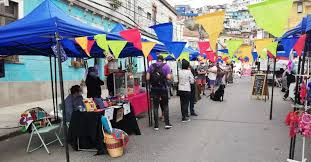
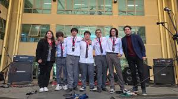
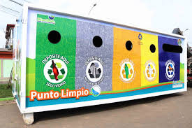

ACTUALIDAD
Municipio inaugura nueva feria barrial para impulsar el comercio local

La nueva feria reúne a emprendedores de distintos sectores de la comuna y busca
fortalecer la economía local, además de generar un espacio permanente de encuentro
entre vecinos, productores y autoridades.
CULTURA
Estudiantes participan en jornada artística con foco en identidad local

Diversos establecimientos educacionales desarrollaron actividades culturales y
presentaciones artísticas orientadas a reforzar el valor de la historia, la
creatividad y la participación de la comunidad escolar.
MEDIOAMBIENTE
Campaña de reciclaje amplía cobertura con nuevos puntos limpios en la comuna

El programa municipal incorporó nuevos espacios de reciclaje para facilitar la
separación de residuos y promover hábitos sustentables entre vecinos, colegios y
organizaciones territoriales.